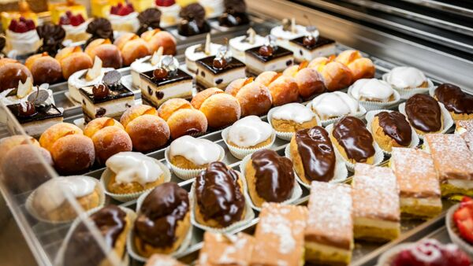
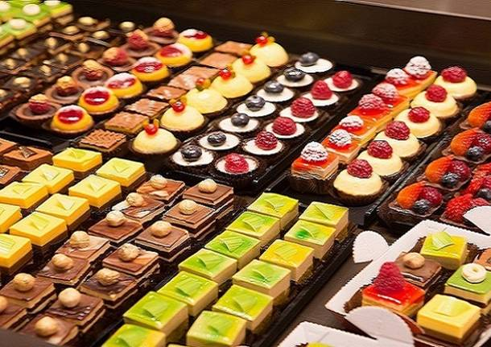

C'era una volta una piccola pasticceria chiamata Dolce Amore, situata in una pittoresca cittadina. Fondata dalla talentuosa pasticciera Isabella, la pasticceria ha iniziato la sua avventura nel 1995 con l'obiettivo di portare gioia e dolcezza alle persone attraverso i suoi prodotti artigianali. La Pasticceria Dolce Amore ha rapidamente guadagnato una reputazione eccellente grazie alla sua attenzione per la qualità e alla dedizione per la creazione di prelibatezze uniche. Isabella ha sempre creduto nella freschezza degli ingredienti e nell'arte di mescolare sapientemente farine, burro, zucchero e frutta per creare opere d'arte commestibili.  Grazie al suo impegno e alla sua passione, Dolce Amore è cresciuta negli anni, diventando un punto di riferimento per gli amanti dei dolci nella regione. La pasticceria ha ampliato la sua offerta, introducendo una vasta gamma di torte, pasticcini, biscotti e dessert al cucchiaio, ciascuno con il tocco unico di Isabella. Oltre alla qualità dei prodotti, Dolce Amore ha sempre puntato sull'esperienza dei clienti. L'atmosfera accogliente e il personale cordiale hanno contribuito a creare un ambiente in cui le persone si sentono a casa. I clienti potevano sedersi, rilassarsi e gustare le prelibatezze dolci, accompagnate da una tazza di caffè aromatico o un tè profumato. Con il passare degli anni, Dolce Amore è diventata una vera e propria icona della città. Le persone non solo affollavano la pasticceria per acquistare dolci per le occasioni speciali, come matrimoni e compleanni, ma spesso si recavano lì semplicemente per indulgere in un momento di dolcezza quotidiana.  Con l'avvento della tecnologia e l'evoluzione delle abitudini dei clienti, Dolce Amore ha deciso di espandersi anche online. È stato creato un sito web accattivante e user-friendly per rendere più accessibili i prodotti della pasticceria a un pubblico più ampio. Il sito web presenta fotografie succulente dei dolci, una descrizione dettagliata di ogni prodotto e la possibilità di effettuare ordini online. Ora, i clienti possono comodamente sfogliare il catalogo online, scegliere i loro dolci preferiti e riceverli direttamente a casa loro. La Pasticceria Dolce Amore ha mantenuto l'attenzione sulla qualità e sulla freschezza, assicurandosi che ogni dolce spedito sia un piccolo pezzo di felicità.